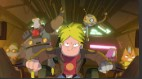
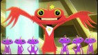
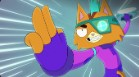
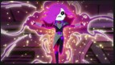
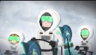
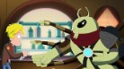
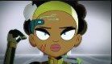
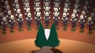
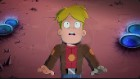
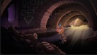

-

Capítulo 1
Una buena: Gary está vivo. Dos malas: es prisionero de un archienemigo completamente loco, y la única forma de escapar que tiene podría ser la última
-

Capítulo 2
¿Nadie puede ser tan feliz, no? Gary y compañia descubren, probablemente demasiado tarde, que la tripulación más dichosa del universo tiene un secretito.
-

Capítulo 3
La tripulación sigue la pista de un tatuaje y fija rumbo hacia el planeta de Ash. Luego, un novio inseguro trata de robar la nave para llegar a tiempo a su casamiento.
-

Capítulo 4
Después de chocar, la mitad de la tripulación queda atrapada en otra dimensión. ¿Ahora quién podrá ayudarlos? Me pareció haber visto un lindo gatito.
-

Capítulo 5
Gary consigue información jugosa sobre la ubicación de su madre abandónica y jura encontrarla para decirle todo lo que piensa y un poco más.
-

Capítulo 6
Tras la desaparición de Mooncake, Gary y la tripulación no escatiman esfuerzos para encontrarlo. Mientras tato, Tribore quiere reconstruir la Resistencia.
-

Capítulo 7
Las necesidades de Nightfall traen graves consecuencias. Por otra parte, con AVA desconectada, HUE quiere volver a la cima. ¿Clarence? Sigue sumando enemigos.
-

Capítulo 8
Es un viaje al pasado, la tripulación tropieza con la oportunidad de vengarse de un viejo enemigo y reconectar con una persona tan amistosa como familiar.
-

Capítulo 9
Después de recibir un mensjae enigmático de Quinn, Gary y la tripulación salen en una misión de rescate. Tribore se lamenta por un amor imposible.
-

Capítulo 10
Pequeño Cato abandona la nave desesoso de olvidar el pasado, pero Gary no piensa dejar que su amigo se vaya muy lejos. Clarence seduce a una viuda con plata.